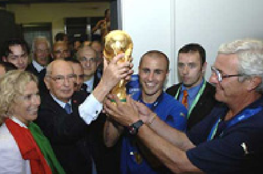

Футбо́л (от англ. foot — ступня, ball — мяч) — командный вид спорта, в котором целью является забить мяч в ворота соперника ногами или другими частями тела (кроме
рук) большее количество раз, чем команда соперника.
В настоящее время самый популярный и массовый вид спорта в мире. ФИФА и Международный олимпийский комитет используют «футбол» как официальное международное название игры. Полное англоязычное название игры, «association football» («футбол
по правилам Ассоциации»), было выбрано после создания английской Футбольной ассоциации в 1863 году, чтобы отличать эту игру от других разновидностей футбола, существовавших в то время, например регби-футбол («rugby football», «футбол по правилам
Школы Рагби»), где была разрешена игра руками.
Со временем длинные названия вариантов игры стали сокращаться в повседневной речи и печати. Сначала в Англии было распространено сокращение «assoc.», затем в 1880-х годах от него образовался термин «соккер» (англ. soccer) путём добавления к сокращению
«-soc-» суффикса «-er» на оксфордский манер[en] (по аналогии регби-футбол сокращённо назывался «раггер» (англ. rugger)).